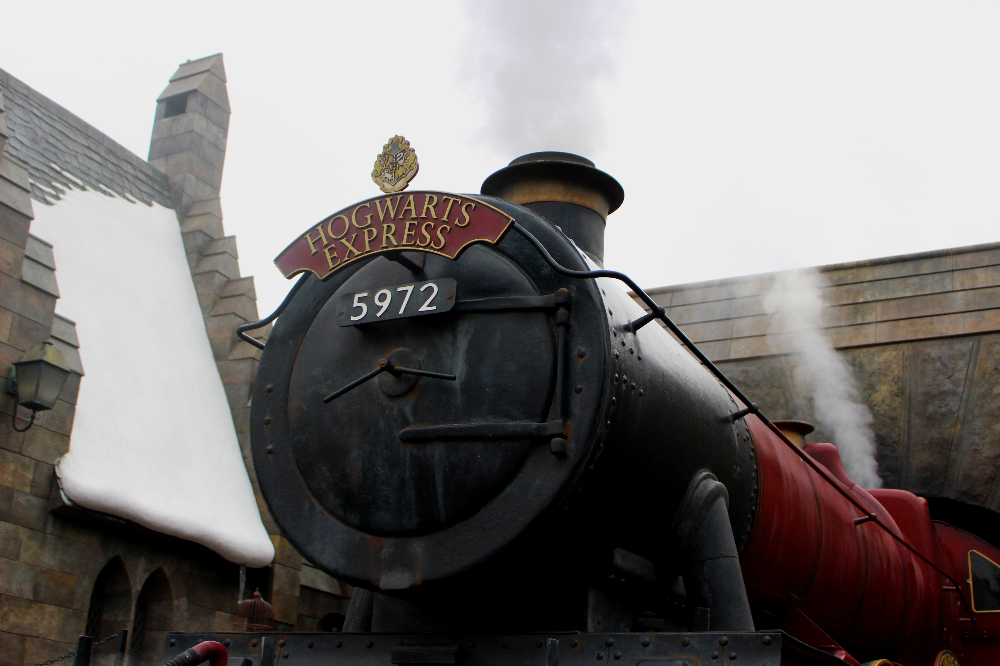
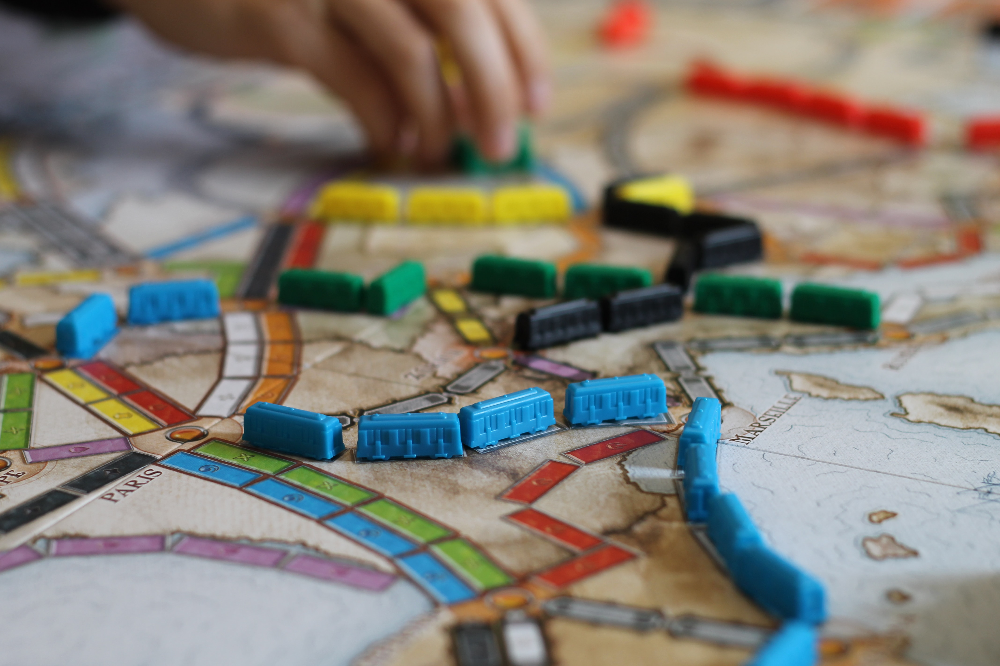

Contexte

Sujet : Création du jeu les Aventuriers du Rails en Java
Objectif : Réinventer le jeu les Aventuriers du Rails en Java avec une interface utilisateur fonctionnelle. L’application devra reprendre les différentes fonctionnalités du vrai jeu que ce soit un plateau interactif ou encore une vue sur les cartes du joueur en temps réel.
Code existant : L'application mise à disposition possède le minimum de code pour pouvoir exécuter l’application néanmoins, il n’y a aucune fonctionnalité utilisateurs disponibles.
Interface Utilisateur : Le joueur a accès à une interface dans laquelle il peut voir le plateau et avoir des interactions avec celui-ci. De plus, il peut voir ses cartes et il peut piocher dans les différents tas si c’est son tour. Enfin, il a un aperçu des points de chaque joueur par rapport à l'avancée de la partie.
Le but du projet est donc de créer une application fonctionnelle qui reprend le jeu de société les Aventuriers du Rail. Ce projet est accès sur la programmation (JAVA) ainsi que le design de l'interface utilisateur.
Analyse
Lors de ce projet, j'ai pu acquérir des compétences techniques importantes en informatique.
J’ai notamment amélioré mes notions dans le langage Java, car ce projet avait pour objectif d'appliquer les différents principes que nous avons étudiés en cours. Que ce soit, par exemple, la programmation orientée Objet avec la création d’interface ou encore de Classe Abstraite.
Par ailleurs, j’ai pu découvrir durant ce projet les différents aspects que l’on prend en compte pour créer une interface utilisateur.
Tout d’abord, il est important de comprendre les besoins des utilisateurs afin de créer une interface qui répond à leurs attentes. Par ailleurs, il faut réaliser des recherches et des tests pour identifier les problèmes que les utilisateurs rencontrent et les fonctionnalités qu'ils souhaitent ajouter.
De plus, il est primordial d’avoir une cohérence dans l'ensemble de l'interface utilisateur pour que les utilisateurs puissent se repérer facilement. Les éléments tels que la police, les couleurs, les icônes et les boutons doivent être cohérents sur toutes les pages et les fonctionnalités.
Par ailleurs, l'interface utilisateur doit être responsive et ainsi s'adapter à toutes les tailles d'écrans pour offrir une expérience utilisateur optimale sur toutes les tailles d’écrans.
Pour conclure sur cette partie d’analyse, ce projet m’a permis de développer mes compétences dans les langages Java et JavaFX. Par ailleurs, j’ai pu retenir les aspects importants à prendre en compte pour créer une bonne interface utilisateur. J’ai pu ainsi appliquer ces apprentissages dans les projets que j’ai réalisés par la suite.
Améliorations

Après avoir travaillé sur ce projet pendant 1 semestre, nous avons pu apporter une base solide au projet avec un jeu totalement jouable et une interface utilisateur intuitive. Néanmoins, nous sommes conscients que nous pouvons l'améliorer en apportant de nouvelles fonctionnalités.
Ainsi, la carte du jeu couvre actuellement l’Europe. On pourrait imaginer étendre celle-ci avec une carte du monde, car le jeu des Aventuriers du Rail possède plusieurs versions que ce soit Europe, Monde, États-Unis…
De plus, nous pourrions mettre en place des pop-up pour les différents choix que l’utilisateur doit effectuer durant la partie. Cela permettrait de rendre l’interface plus vivante.